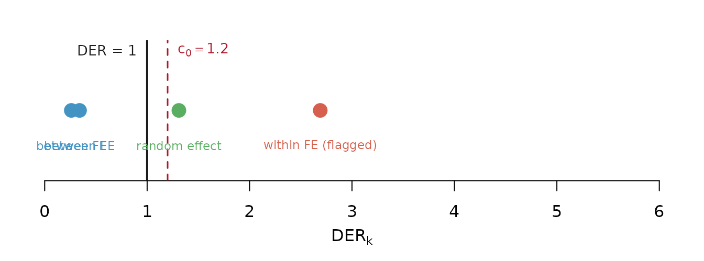

The Design Effect Ratio: Definition and Regimes
JoonHo Lee
2026-07-04
Source:vignettes/theory-der.Rmd
theory-der.RmdOverview
This vignette is written for methodologists. It defines the
Design Effect Ratio (DER), the per-parameter diagnostic
that svyder computes, and explains the three regimes it
distinguishes and the information-source reasoning that governs them. We
stay at the level of definition and intuition: we motivate the
quantity, state what it measures, and interpret its regimes. The
explicit construction of its numerator (the declared variance target) is
deferred to vignette("theory-sandwich"), and the
closed-form decomposition theorems that predict its value are deferred
to vignette("theory-decomposition").
It is worth being precise about what is old and what is new here. The Kish design effect (Kish, 1965), the sandwich / linearisation variance for complex surveys (Binder, 1983), the pseudo-posterior for informative sampling (Savitsky & Williams, 2022), and the design-based covariance calibration of pseudo-Bayesian draws (Williams & Savitsky, 2021) are all established. What is novel in this work is (i) turning the design effect into a per-parameter ratio against the model posterior variance, (ii) showing that this ratio decomposes into a design-effect factor modulated by hierarchical shrinkage, and (iii) using it to correct selectively — only the parameters that need it.
We cover, in order:
- From Kish DEFF to DER — why one global scalar is not enough for a hierarchical model, and the formal definition of the ratio.
- The three regimes — what \mathrm{DER}_k > 1, \approx 1, and < 1 each mean, and why the third one is the reason to correct selectively.
- Why parameters differ — the information-source argument: within-group variation is exposed to the design; between-group variation is shielded by shrinkage.
- The declared variance target, in brief — one paragraph on the numerator, with the construction deferred.
- A first look at the numbers — DER computed live on the bundled data.
- Notation — a compact table matching the paper.
From Kish DEFF to DER
The classical Kish design effect summarises, in a single number, how much unequal weighting inflates the variance of an estimator relative to a self-weighting sample of the same size:
\mathrm{DEFF} \;=\; \frac{N \sum_{ij} w_{ij}^{2}}{\left(\sum_{ij} w_{ij}\right)^{2}},
where w_{ij} is the design weight for unit i in group j and N is the sample size (Kish, 1965). By construction \mathrm{DEFF} \ge 1, with equality under equal weights. It is a property of the weights, not of any particular parameter.
That scalar view is exactly what breaks down for a Bayesian hierarchical model. A hierarchical fit produces many parameters at once — a grand mean, regression coefficients that may vary within or between groups, and a whole vector of random effects — and these do not inherit the design effect uniformly. A coefficient identified purely from within-group contrasts feels the full force of the design-induced correlation among same-group units; a coefficient identified from between-group contrasts is largely shielded by the shrinkage prior; the random effects sit somewhere in between. A single \mathrm{DEFF} cannot express this — it has one value, but the model has d = p + J directions of uncertainty that respond differently.
Key insight. The Kish \mathrm{DEFF} is a scalar summary of the weights. A hierarchical model has many parameters that inherit design uncertainty at different rates. The DER promotes the design effect to a vector — one value per parameter — so the diagnostic can distinguish them.
The DER makes this per-parameter. For each parameter k, compare the variance its posterior should carry if it properly reflected the design (the declared variance target V_{\mathrm{target}}) against the variance its MCMC posterior does carry (\Sigma_{\mathrm{MCMC}}):
Definition 1 (Design Effect Ratio). \mathrm{DER}_k \;=\; \frac{[V_{\mathrm{target}}]_{kk}}{[\Sigma_{\mathrm{MCMC}}]_{kk}}.
The numerator V_{\mathrm{target}} is a design-based sandwich covariance evaluated at the posterior mean \hat{\boldsymbol{\phi}}; the denominator is the empirical covariance of the pseudo-posterior draws. Both are d \times d matrices, and the DER reads off their diagonal entries, parameter by parameter. The ratio is population-indexed and post-fit: it diagnoses a fitted posterior, it does not change the fit.
Note. The DER uses only diagonal entries of the two covariance matrices, so it is well defined even when V_{\mathrm{target}} is rank-deficient (which happens whenever the number of clusters is smaller than the number of parameters). The off-diagonal structure matters only at the correction step; see
vignette("theory-classification-correction").
The three regimes
Reading the ratio against 1 partitions the parameters into three regimes. The number 1 is the natural reference: it is the point at which the posterior already carries exactly the variance the design demands.
\mathrm{DER}_k > 1 — the posterior understates the target. The model-based interval is too narrow relative to the design-based target; the design injects uncertainty the pseudo-posterior has not absorbed. The corrective action is to widen this parameter’s interval. These are the parameters a correction is meant to touch.
\mathrm{DER}_k \approx 1 — agreement. The posterior variance already matches the target to within a tolerance. Leave it alone; correcting it would only add noise.
\mathrm{DER}_k < 1 — the posterior is already wider than the target. Here a blanket correction would narrow an interval that is legitimately wide. That width is not an error to be removed — it is hierarchical-shrinkage protection, the pooling that stabilises weakly-identified group effects. A correction that “fixed” it would destroy exactly the protection the hierarchical prior was there to provide.
Key insight. The whole case for selective correction lives in the third regime. A correction applied to every parameter cannot tell \mathrm{DER} > 1 (needs widening) from \mathrm{DER} < 1 (needs to be left alone) — it rescales both, and in doing so it collapses the intervals of the shrinkage-protected parameters. The DER is the switch that turns correction on only where \mathrm{DER}_k exceeds a threshold c_0.
The threshold is a tolerance around the “\approx 1” region: svyder uses
c_0 = 1.2 by default (a 20% margin), so
a parameter is flagged for correction only when \mathrm{DER}_k > 1.2. The rationale for
that value, and its robustness, belong to
vignette("theory-classification-correction").
The schematic below places a few representative DERs on the number line. Two sit below 1 (protected — leave them), one straddles the tolerance band, and one sits well above the threshold (flag and widen).

The three DER regimes on a number line. The solid line marks DER = 1 (posterior matches target); the dashed line marks the default threshold c0 = 1.2. Points left of 1 are shrinkage-protected (leave alone); points above the threshold are flagged for widening.
Why parameters differ: information source
Why should two coefficients in the same model inherit the design effect at such different rates? The answer is where their identifying information comes from.
Consider a design that oversamples some clusters and undersamples others, inducing correlation among units in the same cluster. A within-group covariate — one that varies among the units of a cluster — is identified entirely from intra-cluster contrasts. Those contrasts are precisely the ones the design distorts, and the random-effect prior on \theta_j operates at the group level, so it cannot absorb within-group correlation. The within-group coefficient is therefore fully exposed to the design effect.
A between-group covariate — one that is constant within each cluster and varies only across clusters — is identified from inter-cluster contrasts. But those between-group differences are exactly what the shrinkage prior pools: the prior treats each group’s mean as a draw around a common centre, so between-group information is diffuse in the group-level prior. The between-group coefficient is therefore shielded by shrinkage, and its DER comes in well below the naive design effect.
Key insight. Within-group variation is fully exposed to design-induced intra-cluster correlation — the \theta_j prior cannot reach it. Between-group variation is shielded, because that is the variation the shrinkage prior pools. Same design, same \mathrm{DEFF}; opposite exposure.
This split is captured by a single quantity, the
between-group share R_k of covariate k’s identifying variation. A pure
within-group covariate has R_k = 0
(nothing shielded); a pure between-group covariate has R_k = B, the maximum the shrinkage factor
allows. svyder reports R_k
in der_decompose(), and
vignette("theory-decomposition") proves that the
fixed-effect DER is exactly \mathrm{DEFF}\,(1
- R_k) — so R_k is the dial that
slides a coefficient’s DER between \mathrm{DEFF}(1-B) (fully shielded) and \mathrm{DEFF} (fully exposed). For now, read
R_k as the fraction of a
covariate’s signal that lives between groups, and is therefore
protected.
The declared variance target, in brief
The numerator of Definition 1 is the declared variance target, a design-based sandwich (Binder, 1983; Savitsky & Williams, 2022):
V_{\mathrm{target}} \;=\; H^{-1}\, J_c\, H^{-1},
with a bread H (the
penalised posterior Hessian — the curvature of the objective the sampler
actually explores, including the prior precision on the random effects)
and a meat J_c (a
cluster-aggregated, stratum-centred outer product of the weighted score
totals, with a finite-cluster correction). The word declared is
deliberate: the analyst declares the aggregation unit
(design PSUs versus model groups) and the weight
convention, and those choices are part of the estimand — the
DER changes materially between them. The full construction, the reasons
the posterior Hessian is the right bread, and the gaussian
score fix are the subject of vignette("theory-sandwich");
we do not reconstruct them here.
A first look at the numbers
The cleanest way to see that the DER is not one global
number is to compute it where the design effect is switched off. The
bundled sim_hlr dataset is a balanced gaussian hierarchical
model with equal weights, so its Kish design effect is
exactly \mathrm{DEFF} = 1. If the DER
were merely a relabelled \mathrm{DEFF},
every parameter would sit at 1. It does
not: with the design effect removed, the DERs isolate the
within/between + shrinkage structure alone.
der_sim <- der_compute(
sim_hlr$draws,
y = sim_hlr$y,
X = sim_hlr$X,
group = sim_hlr$group,
weights = sim_hlr$weights,
cluster = sim_hlr$group, # model-group target
family = "gaussian",
sigma_theta = 0.5,
sigma_e = 1.0,
param_types = c("fe_between", "fe_within")
)
der_sim <- der_classify(der_sim, verbose = FALSE)
td <- tidy(der_sim)
gl <- glance(der_sim)
# the two fixed effects
td[td$term %in% c("beta[1]", "beta[2]"), c("term", "der", "tier", "flagged")]
#> term der tier flagged
#> beta[1] beta[1] 0.09979956 I-b FALSE
#> beta[2] beta[2] 1.31358626 I-a TRUE
# whole-model summary: DEFF = 1, yet the DERs span a wide range
c(deff = round(gl$mean_deff, 3),
der_min = round(gl$der_min, 3),
der_max = round(gl$der_max, 3),
n_flagged = gl$n_flagged,
n_params = gl$n_params)
#> deff der_min der_max n_flagged n_params
#> 1.000 0.049 1.314 1.000 12.000The mean design effect is 1, exactly 1, yet the DERs run from about 0.049 to about 1.314. The structure is precisely what the theory predicts with \mathrm{DEFF} = 1:
- the within-group coefficient
beta[2]sits at \mathrm{DER} \approx 1.31 — near \mathrm{DEFF} = 1, the fully-exposed value (it is a small sample, so it overshoots slightly); - the between-group intercept
beta[1]sits at \mathrm{DER} \approx 0.10 — near \mathrm{DEFF}\,(1 - B) \approx 0.17, the fully-shielded value (B \approx 0.83 here); - the random effects all sit below 1 (their DERs run roughly [0.05, 0.85]), reflecting shrinkage protection.
Only 1 of 12 parameters is flagged. This is the honest reading: with \mathrm{DEFF} = 1 there is no design inflation to inherit, so the DERs \ne 1 trace out the shrinkage geometry alone, up to finite-sample noise (J = 10 groups is small). One should not say “all DERs equal 1” — they do not, and the point of the example is exactly that they do not.
Note. Contrast this with a real design. The bundled
nsece_demo(a synthetic NSECE-style survey, \mathrm{DEFF} = 2.728, computed under the design-PSU targetcluster = nsece_demo$psu) produces a DER range of [0.235, 5.308] with 30 of 54 parameters flagged: the within-state poverty coefficientbeta[2]reaches 2.689 while the two between-state coefficients sit at 0.263 and 0.343. Now the design effect is present, and the DERs spread across both regimes. The applied Getting Started vignette walks through that diagnostic end to end.
Notation
The symbols used throughout the method vignettes, matching the paper:
| Symbol | Meaning |
|---|---|
| \mathrm{DER}_k | Design Effect Ratio for parameter k: [V_{\mathrm{target}}]_{kk} / [\Sigma_{\mathrm{MCMC}}]_{kk} |
| V_{\mathrm{target}} | Declared design-based sandwich covariance target, H^{-1} J_c H^{-1} (d \times d) |
| \Sigma_{\mathrm{MCMC}} | Posterior covariance of the pseudo-posterior MCMC draws (d \times d) |
| H | Penalised (posterior) Hessian: weighted pseudo-likelihood curvature +\,\mathrm{diag}(\mathbf 0_p, \tau, \dots, \tau) |
| J_c | Cluster-aggregated, stratum-centred, DF-corrected meat (rank \le number of clusters) |
| \mathrm{DEFF} | Kish global design effect, N \sum w^2 / (\sum w)^2 (\ge 1) |
| B | Shrinkage / reliability factor, \sigma_\theta^2 / (\sigma_\theta^2 + \sigma_e^2 / n); B \in (0,1) |
| R_k | Between-group share of covariate k’s identifying variation; R_k \in [0, B] |
| \kappa(J) | Finite-group correction, 1 - 1/[J(1-B) + B]; \to 1 as J \to \infty |
| \sigma_\theta | Random-effect standard deviation |
| \tau | Random-effect prior precision, \tau = 1/\sigma_\theta^2 |
| c_0 | DER threshold (default c_0 = 1.2): parameter flagged when \mathrm{DER}_k > c_0 |
The paper stacks the parameters as \boldsymbol{\phi} = (\boldsymbol{\beta}^{\mathsf T},
\boldsymbol{\theta}^{\mathsf T})^{\mathsf T} of dimension d = p + J, with p fixed effects and J random effects; the grand mean \mu is the intercept coefficient. The full
symbol table — including the bread’s block structure (\mathbf A, \mathbf
G, \mathbf D_H, the Schur
complement \mathbf S_\beta) and the
decomposition quantities — is given in
vignette("theory-decomposition").
What’s next?
-
vignette("theory-sandwich")— The Declared Variance Target: Bread and Meat. Constructs the numerator V_{\mathrm{target}} = H^{-1} J_c H^{-1}: why the posterior Hessian is the right bread, the cluster-aggregated meat with stratum centring and the C_h/(C_h - 1) correction, weight conventions, the cluster universe (empty PSUs), and the gaussian score fix. -
vignette("theory-decomposition")— Decomposition Theorems and the Conservation Law. Proves \mathrm{DER}_{\beta_k} = \mathrm{DEFF}\,(1 - R_k) (Theorem 1), the random-effect factorisation \mathrm{DER}_\theta = B \cdot \mathrm{DEFF} \cdot \kappa(J) (Theorem 2), and the conservation identity \mathrm{DER}_\mu + \mathrm{DER}_\theta^{\mathrm{cond}} = \mathrm{DEFF}, verified live withder_theorem_check()andder_decompose(). -
vignette("theory-classification-correction")— the four-tier classification, the threshold rationale, and the selective block-Cholesky correction that acts only on flagged parameters. -
Applied: the Getting
Started vignette runs a full diagnostic on
nsece_demoin one call; the other applied vignettes cover target choice, the pipeline, and the case study.
References
Binder, D. A. (1983). On the variances of asymptotically normal estimators from complex surveys. International Statistical Review, 51(3), 279–292.
Kish, L. (1965). Survey Sampling. Wiley.
Lee, J., Williams, M. R., & Savitsky, T. D. (2026). Design Effect Ratios for Bayesian Survey Models: A Diagnostic Framework for Identifying Survey-Sensitive Parameters. Journal of Survey Statistics and Methodology (submitted).
Savitsky, T. D., & Williams, M. R. (2022). Pseudo Bayesian mixed models under informative sampling. Journal of Official Statistics, 38(4), 901–928. https://doi.org/10.2478/jos-2022-0039
Williams, M. R., & Savitsky, T. D. (2021). Uncertainty estimation for pseudo-Bayesian inference under complex sampling. International Statistical Review, 89(1), 72–107. https://doi.org/10.1111/insr.12376